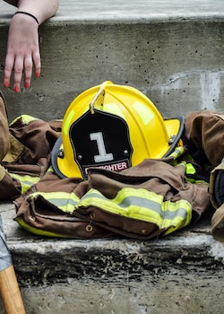

Being of Service
by Elaine Palmore
Have a question or a comment?
Email Elaine

In the early days of my sobriety, after my announcement that I was ready for more, my sponsor suggested that instead of just going to meetings, reading the literature, and working the steps that I should attempt some kind of service work. Not knowing what exactly doing service work entailed, I agreed. One of my first attempts at service work was at the city jail where we were to have meetings with the female inmates who needed a 12 step program. The inmates were a diverse group of many different age groups, nationalities, beliefs, and wide-ranging types of addictions and issues.
The first meeting was off to a rough start because the women were cross talking, snacking, laughing, not paying attention, throwing things across the room, etc. Thankfully, our moderator was more powerful in spirit than the inmates and laid down the law. She told them in no uncertain terms that they were required to pay attention, be respectful, observe the rule about anonymity (not gossiping with other inmates about who attended the meeting), and outlined the inmates role in absorbing the powerful message. It was possible to expel people from meetings for bad behavior or bar them altogether but we all took our role as meeting leaders very seriously and did not expel or ban anyone. One of my most lasting impressions from these meetings was the number of women in the group who could not read. There were several who had memorized the literature so they would not be laughed at or let it be known that they were unable to read.
The female inmate population at that time was housed in the same building as the men but in a different section of the building. We arrived together for the meeting and traveled from one point to another after an extensive search, always together. After one of our meetings as we exited through a hallway downstairs, I passed the man who had raped me. He had been arrested and charged and was dressed in an orange jumpsuit wearing rubber sandals, socks, and handcuffs walking down the same hallway but going in a different direction. To see him unexpectedly was too much for me and I passed out cold. Gratefully the other women in my group were aware of the situation and ministered to my needs until I could collect myself and stop my brain from spinning.
During the winter of 1992 I was sexually assaulted and raped by this ex-boyfriend, who forced his way into my house and threatened to kill me with my own gun. I reported the rape, the police and several female detectives were involved the night of and after the event. I was horrified that this had happened to me and embarrassed that such a nitwit could get me into this situation. I went to the hospital emergency room at about 2:00 am to have the rape kit done to collect evidence of the rape. The rape kit involved running a light over my body to detect fluids, which they found, collected, and cataloged. There were pictures taken of my bruises and lacerations. This incident from beginning to the end was a nightmare, but it taught me about the consequence of bad decisions. There were women from my home group who were with me every step of the way. I never saw him again after my court testimony but the scars remain.
Determined not to be intimidated or deterred, I continued the service work just at a different facility, the Tennessee Prison for Women or TPW. The orientation alone was enough to scare a person into not volunteering. The prison chaplain stated that he didn’t want there to be any surprises for us on our journey through the TPW system. My vision for myself and this service work was that I would impart my knowledge and vast experience of being sober for only two years to these women and we would all flourish. The reverse was actually the case and these women taught me a great deal more than I ever taught them.
These women had been through some experiences that I could not even imagine. Some were women of the streets who lived on the street and made their living on the streets. Some were garden variety alcoholics who had gotten caught stealing, dealing, or being intoxicated in public. Some of these women were in the wrong place at the right time and were arrested and charged. There were assault victims and assault perpetrators and at least one woman who was in for murder. They were imprisoned for years, sometimes decades and could not leave for funerals, family sickness, or other personal tragedies. These meetings changed my perspective on freedom and life in general.
I was blessed to be able to do this volunteer/service work for 4 years, sometimes once a week and at other times 2 or 3 times a week. The inmates were not allowed to have a meeting unless someone from the outside was there to moderate. We, the inmates and I, formed relationships during this period. When I told them that I was getting married they made crafts for me (bookmarks), they sang to me on my birthday, and cried with me when times were rough. At one point in November I had the nerve to complain about all the shopping and preparation that was required of me to have the family over for Thanksgiving. Immediately, they expressed their desire to have just one more chance at Thanksgiving with their families and how very grateful they would be for the opportunity.
This phase of life for me was filled with blessings. I was staying sober, sponsoring other women, working with my sponsor, and attending meetings. I lost my favorite all time post as a tour guide but found another job catering shortly after which taught me a great deal about myself, hard labor, and serving others.
Thank you to all the women who have helped me along the way.
In joy and gratitude,
Elaine
© 2011 Rising Star Studios
info@risingstarstudios.com